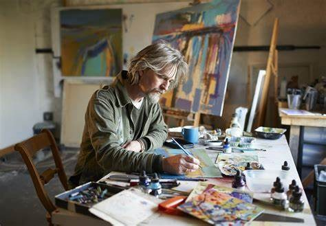

ARTIST
What is an Artist?
An artist is an individual who engages in the creation and expression of art. Artists employ various mediums, techniques, and forms to convey their ideas, emotions, and experiences. They use their skills, creativity, and imagination to produce works of art that can encompass a wide range of disciplines, including painting, sculpture, drawing, photography, printmaking, installation art, performance art, and more.
Types of Artist
• Painter: Painters create artworks using various types of paints, such as oil, acrylic, watercolor, or gouache. They use brushes, palette knives, or other tools to apply paint to surfaces like canvas, paper, or wood.
• Sculptor: Sculptors work with materials such as clay, stone, metal, wood, or mixed media to create three-dimensional artworks. They may carve, mold, model, or assemble materials to shape their sculptures.
• Jeweler: Jewelry-making is a creative and artistic craft that involves designing and crafting pieces of wearable art. Jewelers use their artistic skills and craftsmanship to transform metals, gemstones, and other materials into beautiful and unique jewelry pieces.
• Illustrator: Illustrators specialize in creating visual representations, often for books, magazines, advertisements, or digital media. They use their skills in drawing, painting, or digital art to bring ideas, stories, or concepts to life.
• Photographer: Photographers capture images using cameras to create visual narratives or convey specific messages. They may specialize in various genres such as landscape, portrait, documentary, fashion, or fine art photography.
• Printmaker: Printmakers create artworks through various printmaking techniques, such as relief printing, intaglio, lithography, screen printing, or monotype. They produce multiple copies of their works through the printing process.
• Graphic Designer: Graphic designers use visual elements, typography, and layout techniques to create visual communication designs. They work on projects such as branding, packaging, advertising, website design, or digital media.
• Calligrapher: Calligraphers specialize in the art of beautiful writing. They use various writing tools, styles, and scripts to create visually appealing and intricate lettering and decorative designs.
• Craft Artist: Craft artists create handmade objects using various materials and techniques. They often specialize in specific crafts such as pottery, jewelry making, woodworking, or fiber arts, and create unique, artisanal pieces that blend functionality and aesthetics.
• Tattoo Artist: Tattoo artists create permanent designs on the skin using specialized tattooing equipment. They collaborate with clients to ensure that the artwork meets their vision and aligns with the body's contours.
• Commercial Artist: Commercial artists create visual artworks for commercial purposes, primarily to promote and sell products, services, or ideas. They possess a unique blend of creative skills and business acumen, enabling them to bridge the gap between artistic expression and marketing objectives.
• Digital Artist: Digital artists create art using digital tools and software. They may work with digital painting, 3D modeling, animation, digital collage, or interactive installations.
• Installation Artist: Installation artists create artworks that transform or engage with a specific space or environment. They often use a combination of materials, objects, lights, sounds, or interactive elements to create immersive experiences.
• Mixed Media Artist: Mixed media artists incorporate multiple materials, techniques, or mediums into their artworks. They may combine painting, collage, assemblage, found objects, or digital elements to create unique and layered compositions.
• Ceramic Artist: Ceramic artists work with clay to create pottery, sculptures, or ceramic installations. They use techniques such as wheel throwing, hand-building, glazing, and firing to shape and finish their ceramic pieces.
• Textile Artist: Textile artists work with fabric, fibers, and textiles to create artworks such as tapestries, weavings, quilts, or textile sculptures. They may incorporate dyeing, printing, stitching, or embroidery techniques into their work.
• Glass Artist: Glass artists manipulate and shape glass using techniques such as glassblowing, kiln-casting, or stained glass. They create decorative objects, sculptures, or functional glassware.
How to become an artist?
• Candidates applying for commercial artists must complete class 10 board exam along with 5 year degree courses in art as some of the art schools offer art courses after class 10th.
• Candidates who are opting to continue with 10+2 education, must complete it before applying for any program with a minimum aggregate of 45% or above from a recognized board.
• Candidates must have a bachelor's degree or a diploma in Art along with specialization in an area of interest.
• Some of the art schools conduct entrance exams such as NIFT, NID, to get admission in bachelor of fine Arts
• To pursue Fine Arts, candidates from any field can apply for the course.
• Candidates can pursue undergraduate degrees such as BA Fine Arts, Bachelor of Arts etc.